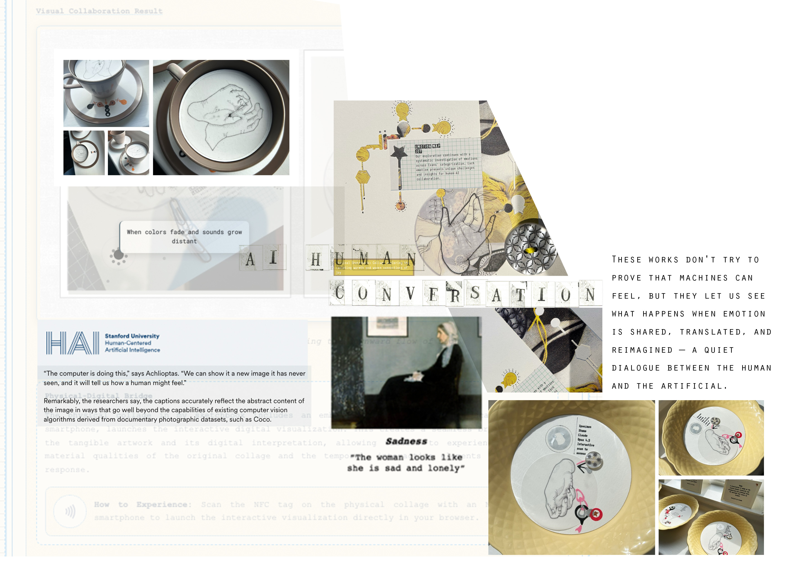

Overview
Introduction
Homework
Create Letters
Task 1
Upload Outcome
Task 2
Edit & Refine A3
Task 3
Reflect & Document
Create Textured Titles for Your Portfolio Pages
You will create hand-crafted letters to use as subheadings on your portfolio pages. These letters have texture and character — they introduce the focus of each page.
Labels and notes
Textured titles with character
Choose any method that suits your style:
After creating your hand-crafted letters, you have two options for adding them to your portfolio:
Upload to Calligraphr
Upload your scanned template back to Calligraphr to automatically convert your letters into an installable font file.
Keep raster texture
Select and copy individual letters from your scanned template, placing them manually in your portfolio document.
Do you want to keep all the texture, ink variations, and imperfections in your letters?

Hand-crafted subheading on a portfolio page
Complete this before class. Bring your scanned template.
Go to Calligraphr.com and download a template. Select only the letters you need for your subheadings.
Print the template. Each letter has a box — your letters must fit inside these boxes.
Fill each box with a letter using your chosen method:
Scan at 300 DPI. Save as JPEG or PNG. Bring to class.
Look at your scanned letters and decide which method you'll use in class:

Completed Calligraphr template ready for scanning
Upload your completed Calligraphr template showing your hand-crafted letters.

Scanned template ready for upload
Upload your scanned Calligraphr template with completed letters.
Upload to Padlet →Bring together your hand-crafted subheading, references, and knowledge-based information to complete a section of your A3 sheet.
Select and arrange letters from your template to create a title that introduces your research focus.
Add proper citations for artists, designers, or sources that inform your work. Use Harvard format.
Include relevant context, analysis, or explanations that demonstrate understanding of your research.
Select the tab that matches how you want to add your letters:
Convert your hand-crafted letters into an installable font, then type your subheadings normally.
Keep all the texture and character of your letters by selecting and placing them manually.
If you want to remove the white paper background around your letters:
Or use Blending Mode: Multiply on the layer to make white transparent.
Hockney, D. (1967) A Bigger Splash [Acrylic on canvas]. London: Tate.
Berger, J. (1972) Ways of Seeing. London: Penguin Books.
Tate (2023) David Hockney. Available at: https://www.tate.org.uk (Accessed: 15 March 2025).

A3 section with hand-crafted subheading, references, and knowledge-based information
Screenshot showing your complete A3 section with subheading, references, and knowledge-based information.
Upload to Padlet →Use the Progress Documentation tool to reflect on your learning and create a PDF record of your work.
Reflection helps you understand what you've learned, identify challenges you overcame, and plan how to improve. It's an essential part of developing as a creative practitioner.
What specific skills or techniques did you work on during this session?
What difficulties did you face and how did you solve them?
What was successful in your approach? What are you pleased with?
What will you do differently or improve next time?
Click the button below to open the Progress Documentation tool in a new tab.
Type your name in the text field at the top. This will appear on your PDF report.
Upload screenshots of your work from this session:
Add a caption to each screenshot describing what it shows.
Select how confident you feel with the skills you practiced:
Complete all four reflection questions thoughtfully. Consider:
Click the "Download Progress Report (PDF)" button. Your PDF will include all your screenshots, captions, confidence rating, and reflections.
Record your progress, add screenshots with captions, rate your confidence, and answer reflection questions — all in one place.
Open Progress Tool →Once you've downloaded your Progress Report PDF, upload it to Padlet to complete this session.